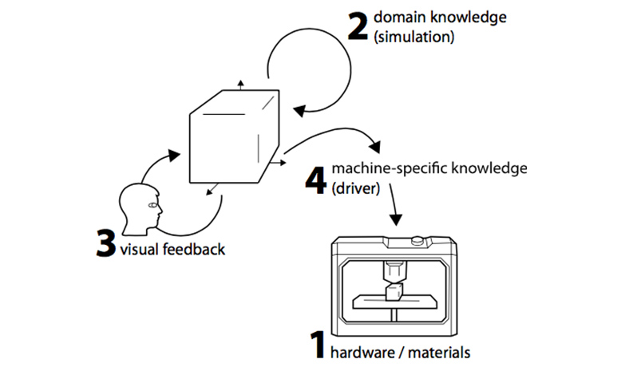

Personal Fabrication:
Survey and Roadmap

While fabrication technologies have been in use in industry for several decades, expiring patents have recently allowed the technology to spill over to technology-enthusiastic “makers”. The big question now is whether the technology will further progress towards consumers, which would allow the technology to scale from hundreds of thousands of users to hundreds of millions of users.
Such a transition would enable consumers to use computing not just to process data, but for physical matter. This holds the promise of democratizing a whole range of fields preoccupied with physical objects, from product design to interior design, to carpentry, and to some areas of mechanical and structural engineering. It would bring massive, disruptive change to these industries and their users.
We analyze similar trends in the history of computing that made the transition from industry to consumers, such as desktop publishing and home video editing, and come to the conclusion that such a transition is likely.
Our analysis, however, also reveals that any transition to consumers first requires a hardware + software system that embodies the skills and expert knowledge that consumers lack: (1) hardware and materials that allow fabricating the intended objects, (2) software that embodies domain knowledge, (3) software that embodies the know-how required to operate the machinery, and (4) software that provides immediate feedback and supports interactive exploration. At the same time, sustained success will only be possible if we also consider future implications, in particular (5) sustainability and (6) intellectual property. We argue that researchers in HCI and computer graphics are well equipped for tackling these six challenges. We survey the already existing work and derive an actionable research agenda.